Ahmad Musyaffa
No: 1
TTL: Brebes, 06 Februari 2008
Hobi : Mencari kesibukan
(so sibuk aja si)
Cita-cita : Manut dalane gusti
Kesan : Kalian semua unik
pesan : Tolong jaga kewarasan kalian
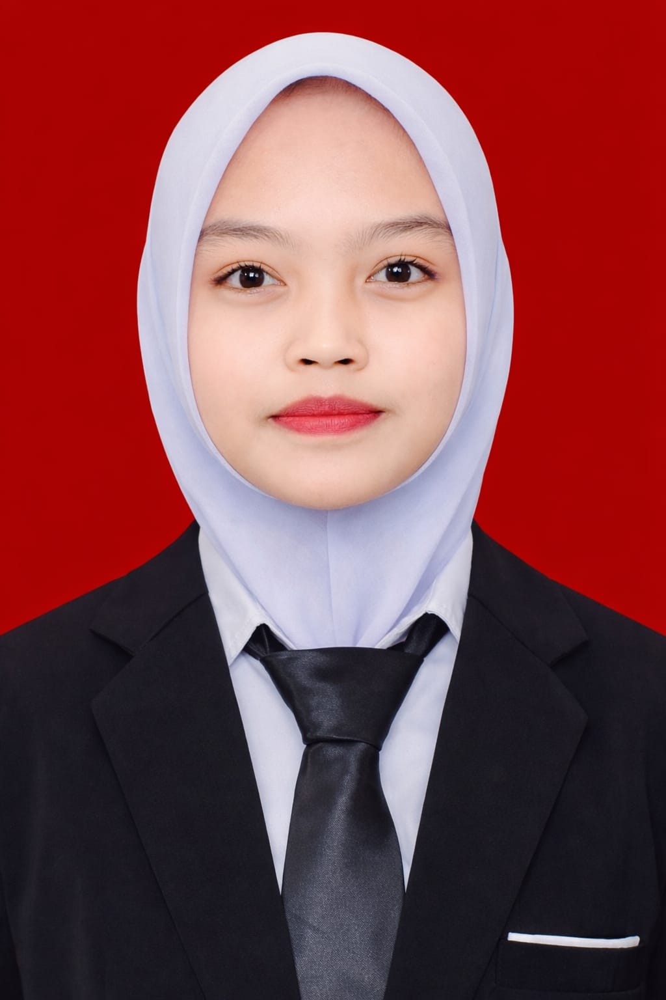
Alfi Zaenah
No : 2
TTL : Brebes, 28 Oktober 2008
Hobi : Membaca novel
Cita-cita : pengusaha sukses
Kesan : Terlihat kompak dari luar padahal penuh drama
pesan : jangan lupa bersyukur atas apa yang telah kamu dapatkan

Amanda Noviyanti
No : 3
TTL : Brebes, 11 November 2007
Hobi : Scroll
Cita-cita : Jadi orang kaya
Kesan : Seru si
pesan : Semangat terus
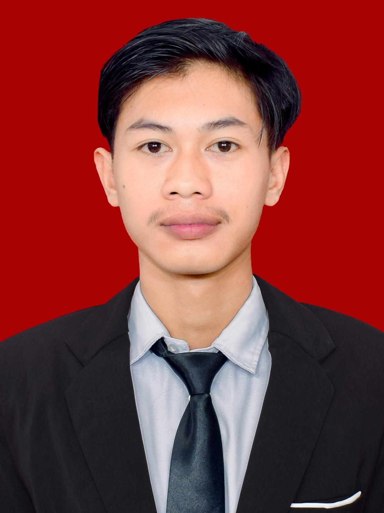
Aril Efendy
No: 4
TTL : Brebes, 18 April 2008
Hobi : Nyari duit
Cita-cita : Sukses
Kesan : Kelas asik
pesan : Sukses terus

Azahra Alia Ramadhani
No : 5
TTL : Brebes, 29 September 2008
Hobi : Watcing and listening to music
Cita-cita : Jadi istri Keifer dan Mark Lee
Kesan : Life is to short to stress just say "kocaakk" and leave
pesan : semoga hari hari halian selalu di penuhi kebaikan, semoga semesta berpihak pada kalian, setiap langkah kalian dimudahkan menuju masa depan yang cerah. teruslah berkembang, terus melangkah, dan temukan kebahagiaan kalian.

Devina Putri Aprilia
No : 6
TTL : Brebes, 04 April 2008
Hobi : Turuuu
Cita-cita : Bahagia in orang tua
Kesan : Langka kesan apa apa
pesan : Jangan hilang arah yaa!

Dinda Dwi Aryani
No : 7
TTL : Brebes, 07 Agustus 2008
Hobi : tata rias Wajah
Cita-cita : MUA
Kesan : banyak ularnya, ehh
pesan : cerita yang asli asli aja kalo ngga asli, kita undur diri
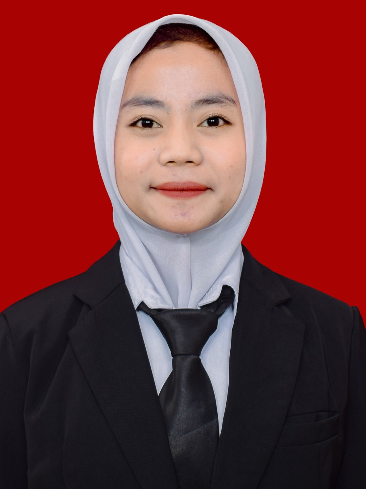
Febi Alwi Saputri
No : 8
TTL : Brebes, 09 Agustus 2008
Hobi : Voli
Cita-cita : Jadi orang sukses
Kesan : Senang bisa ketemu sama kalian semua
pesan : Semangat berproses di masa depan

Fiki Ardiansah
No : 9
TTL : Brebes, 28 Juli 2008
Hobi : Futsal
Cita-cita : Apa bae sing penting bisa
Kesan : Bismillah bisa
pesan : Aja gampang nyerah
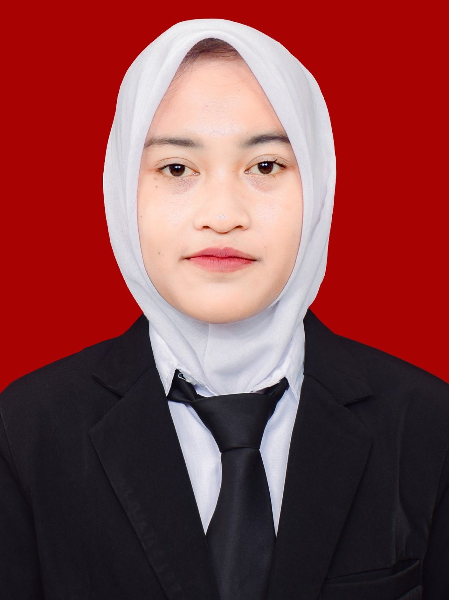
Gita Tri Utami
No : 10
TTL : Brebes, 09 Mei 2008
Hobi : Rebahan
Cita-cita : Jadi orang sukses
Kesan : Gada kesan
pesan : Pokoknya semangat
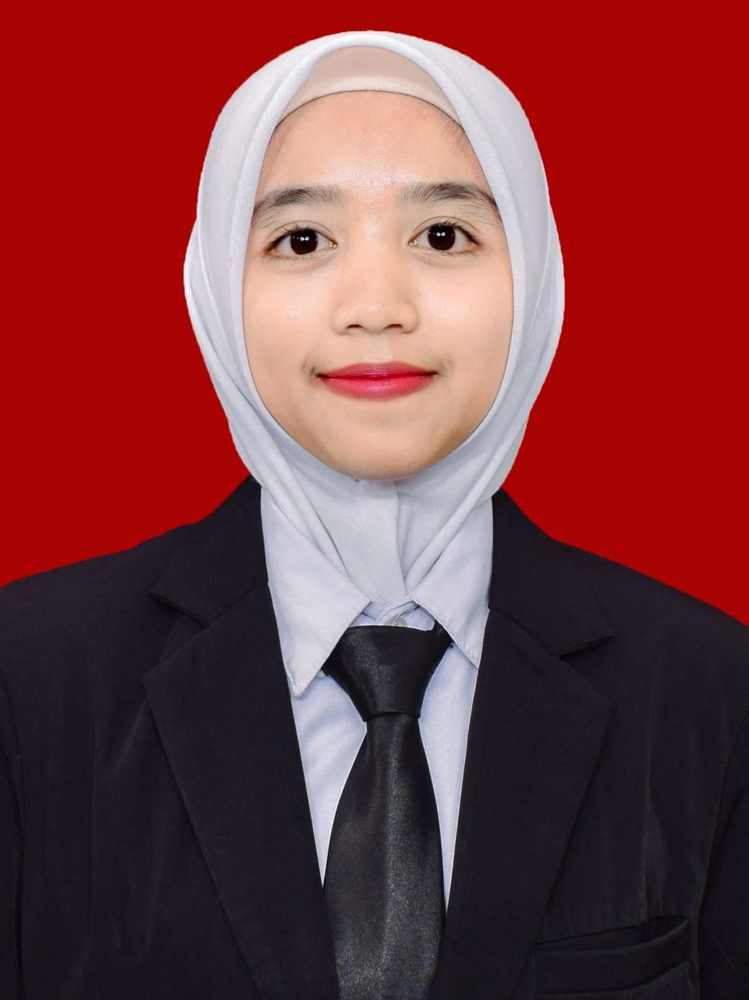
Ica Amelia
No : 11
TTL : Brebes, 21 April 2008
Hobi : Membaca dan memasak
Cita-cita : Guru
Kesan : Banyak ilmu,banyak drama,banyak jajan juga
pesan : Semoga teman teman menjadi orang yang sukses

Iftiyatul Mukaromah
No : 12
TTL : Brebes, 21 Mei 2008
Hobi : Nonton Shinbi's House
Cita-cita : Menjadi orang sukses dan menikmati hidup
Kesan : Kelas yang nyaman,solid, dan kompak
pesan : Tetap solid dan saling mengingat meski terpisah

Irma Novita Sari
No : 13
TTL : Brebes, 17 Juli 2008
Hobi : Mengkhayal + baca manhwa
Cita-cita : Masuk dunia fantasi + jadi princes
Kesan : Gada
pesan : Ciptakan keindahan dari kekacauan
Khaerul Anam
No : 14
TTL : Brebes, 26 Februari 2008
Hobi : Apa saja bisa
Cita-cita : Mempunyai lahan pertanian
Kesan : B aja
pesan : Tetap hidup
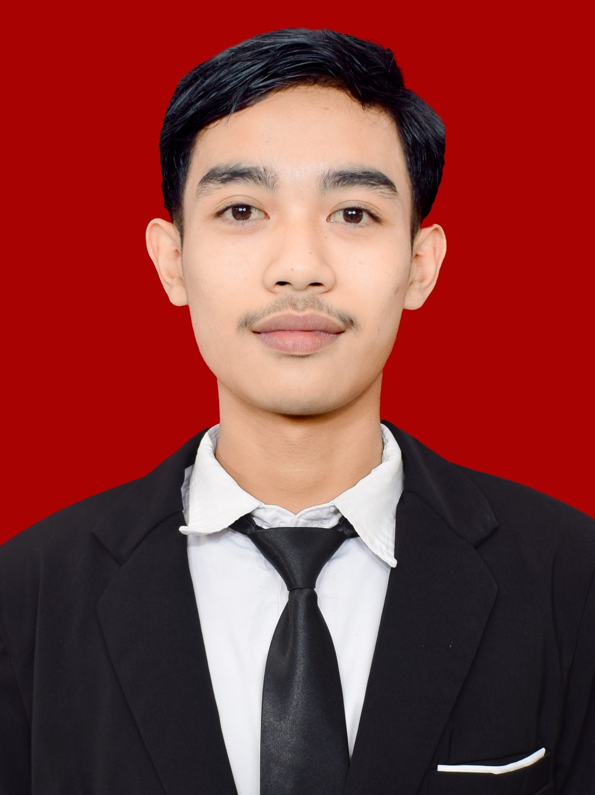
M.Bakhit Abdillah
No : 15
TTL : Brebs, 19 April 2008
Hobi : Apa bae masuk
Cita-cita : Boss muda
Kesan : Langka
pesan : Semoga pada sukses
.JPG)
M.Faozan
No : 16
TTL : Brebes, 01 Desember 2007
Hobi : Volly Ball
Cita-cita : Insyaallah pengusaha
Kesan : Senang bertemu dengan kalian semua
pesan : Tetap semangat berjuang, berproses untuk masa depan
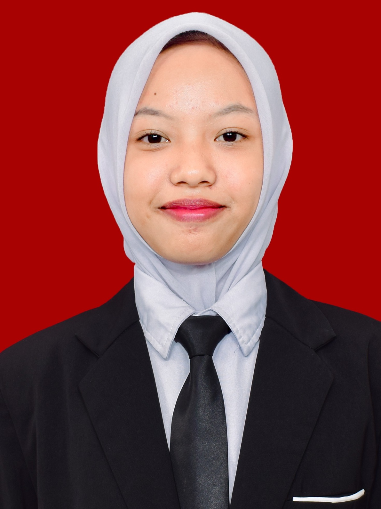
Maulatuz Zahro
No : 17
TTL : Brebes, 1 Maret 2009
Hobi : Jalan Jalan,Masak,Jajan
Cita-cita : Hidup bahagia
Kesan : Senang sekali bisa ketemu, kenal, dan sekelas sama kalian semua i'm so happy
pesan : Thank you for everything, hiduplah dengan baik dan bahagia
Muhammad Fahrizal Maulana
No : 18
TTL : Brebes, 09 Januari 2008
Hobi : Game (epep)
Cita-cita : Pilot pesawat
Kesan : Masa SMK adalah penerbangan paling berkesan bersama kalian semua
pesan : Kejar mimpmu, sampai bertemu lagi diatas awan nanti!
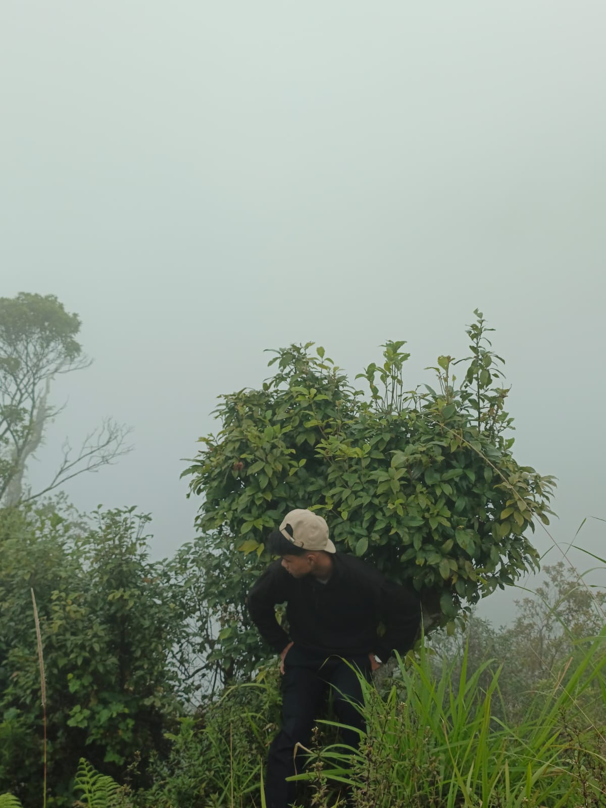
M.Heqal Ilhami
No : 19
TTL : Brebes, 19 Februari 2008
Hobi : Game
Cita-cita : Pengin punya BMW
Kesan : Di kelas ini ternyata ngga seburuk itu
pesan : Enjoy terus

Muslih Anjar Fahmi
No : 20
TTL : Brebes, 09 Februari 2008
Hobi : Gonta ganti
Cita-cita : Pemimpin keluarga pengusaha
Kesan : Random ora jelas
pesan : Hidup ini keras,tidak ada yang gratis, janagn pernah malas untuk bekerja
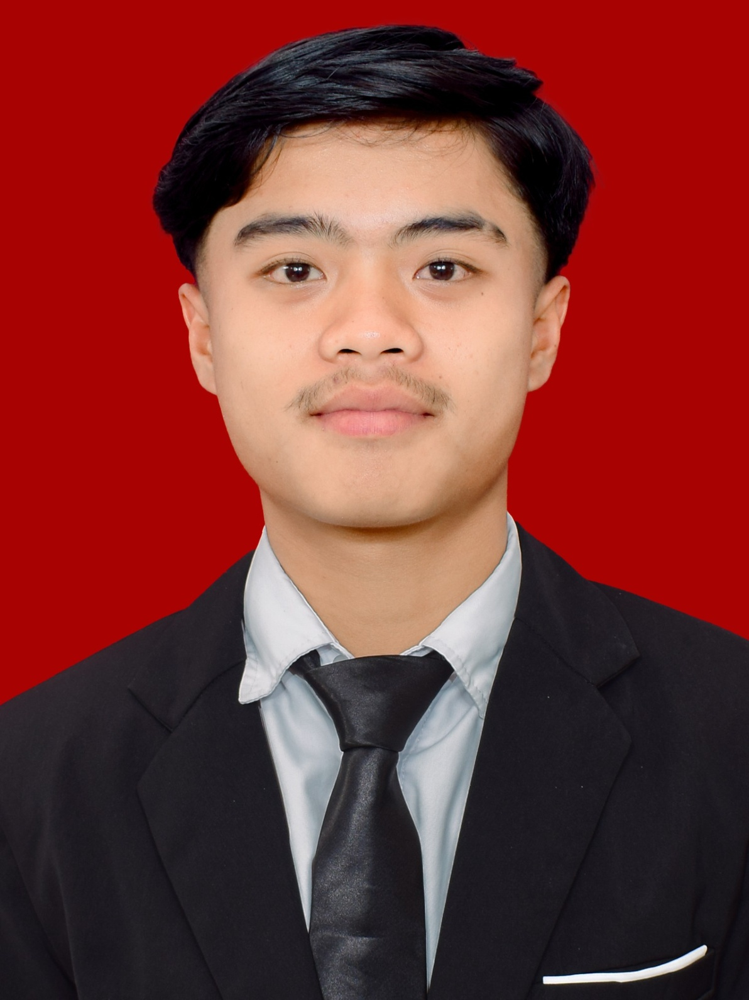
Muzakki Wafa
No : 21
TTL : Brebes, 10 Januari 2008
Hobi : Futsal
Cita-cita : Menjadi orang sukses
Kesan : Masa depan menanti, wujudkan impianmu
pesan : Jadilah dirimu sendiri
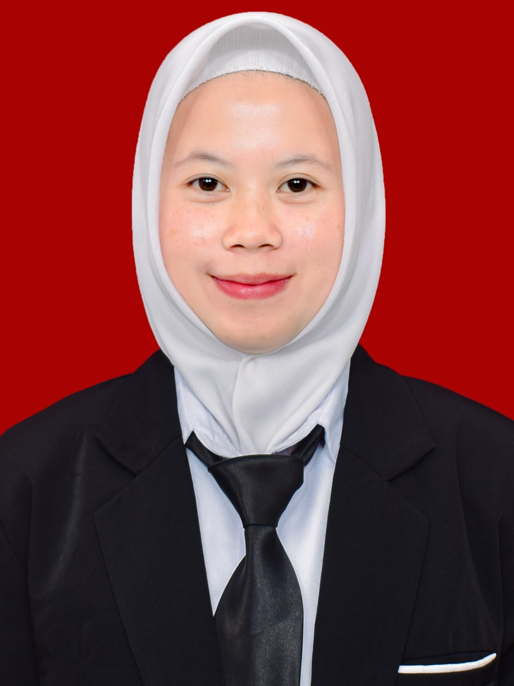
Nahda Izha Auliayana
No : 22
TTL : Brebes, 13 Juli 2007
Hobi : Menggambar dan menulis
Cita-cita : Jadi orang yang bermanfaat
Kesan : Senang bertemu dengan kalian
pesan : Tetap stay bahagia walaupun hati sedang terluka

Okan Ferdiansah
No : 23
TTL : Brebes, 7 Oktober 2008
Hobi : membaca Novel
Cita-cita : Mencapai finansial freedom sebelum 20 tahun
Kesan : Bersama kalian menyenangkan tapi kadang menyakitkan
pesan : Tetap semangat berproses, sampai bertemu di titik terbaik masing masing
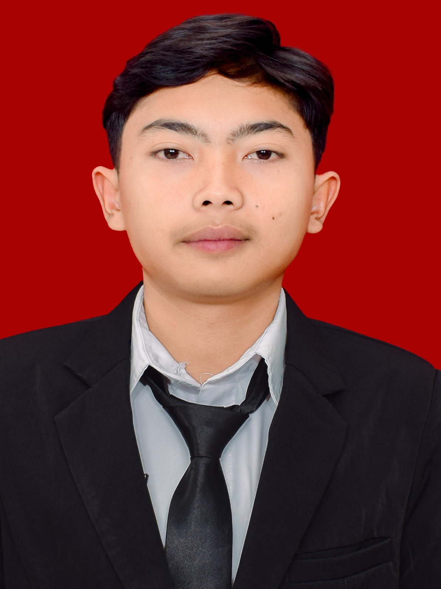
Olga Fahrayzi
No : 24
TTL : Brebes, 21 November 2007
Hobi : Futsal
Cita-cita : Bos muda
Kesan : Senang bisa bertemu dengan kalian
pesan : yang ngejar sarjana semoga di permudah jalanya yang ngejar cita cita semoga lekas tercapai,sukses cuma bonus,darimana usaha kalian,entah 5 tahun atau 10 tahun kedepan cuma mau liat kalian sehat semua dan bertemu lagi kedepannya Sehat terus kawan semoga sukses di masa depan
Raditia Tri Ramadhani
No : 25
TTL : Brebes, 1 september 2008
Hobi : Menggambar
Cita-cita : Arsitek
Kesan : isinya full anomali cuy
pesan : berbahagialah dengan pilihanmu
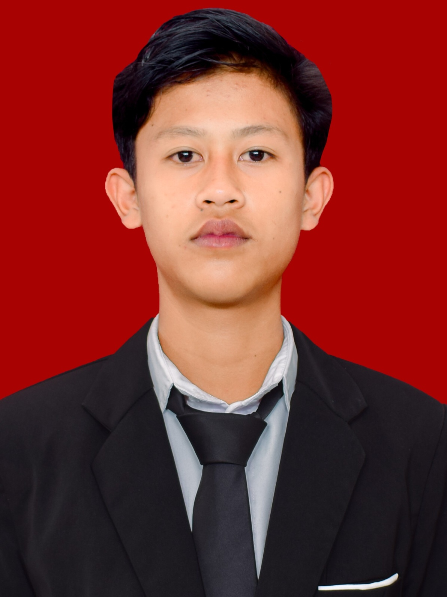
Raditya Ramadhani
No : 26
TTL : Brebes, 08 September 2008
Hobi : Takro
Cita-cita : Supir truk
Kesan : -
pesan : Jangan lupa sholat

Rehan Nurhidayat
No : 27
TTL : Brebes, 29 Juli 2007
Hobi : Tidur
Cita-cita : Menguasai dunia
Kesan : -
pesan : Jadilah pria sawit

Revi Mariska
No : 28
TTL : Brebes, 29 April 2008
Hobi : Novelan
Cita-cita : Apa bae
Kesan : I know that people who come will go, but i hope we remains friends until we grow old
pesan : Kejar mimpimu, jika lelah istirahat, jangan menyerah

Risnani Ayu Suhanah
No : 29
TTL : Brebes, 04 Mei 2009
Hobi : Mangan
Cita-cita : Pengangguran sukses
Kesan : Vibe kelas kita luar biasa (kurang ajar)
pesan : Jangan kangen yaa
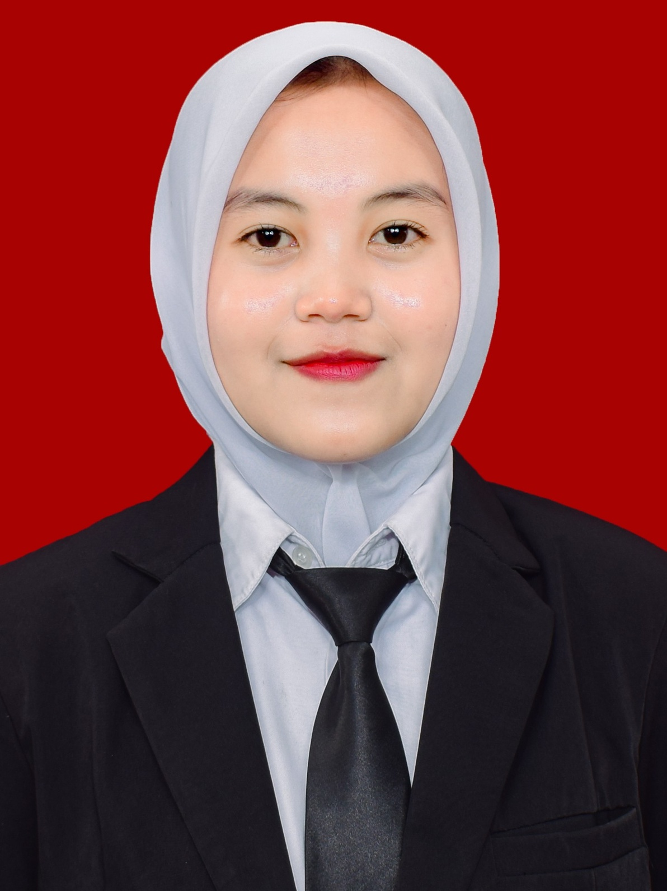
Salsa Fatma Dila
No : 30
TTL:Brebes, 12 Februari 2008
Hobi:Mengkhayal
Cita-cita:Pengangguran kaya raya
Kesan : Selamat tinggal drama revisi! selamat datang dunia kerja yang sesungguhnya
pesan : Lihatlah hati bukan sekedar rupa

Tiara Sandika
No : 31
TTL : Brebes, 01 Januari 2008
Hobi : Tidurr
Cita-cita : Jadi orang sukses dunia akhirat
Kesan : Apa yah jen
pesan : Semangat untuk masa depan

Vera Puji Lestari
No : 32
TTL : Brebes, 12 Februari 2008
Hobi : Rebahan
Cita-cita : Bos sawit
Kesan : Mbuh
pesan : Jadi orang baik terus yaa
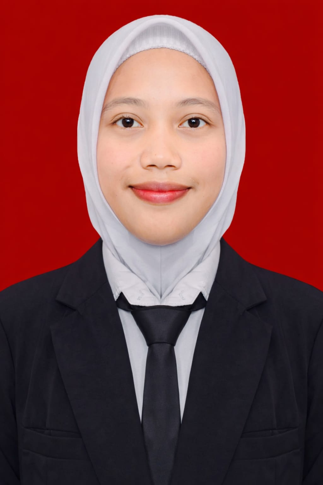
Winda Sulistiyani
No : 33
TTL : Brebes, 02 Februari 2008
Hobi : Membaca
Cita-cita : Jadi istri renjun, kuliah di UNDIP
Kesan : Seru kalo lagi kompak
pesan : Maaf ya kalo winda banyak salah,
tetap semangat buat hidup,jangan pernah lupa sama winda cewe renjun

Yovan Diki Abdika
No : 34
TTL : Brebes, 22 April 2008
Hobi : Nge game
Cita-cita : Pengangguran tapi digaji
Kesan : wkwkwkw
pesan : Tetap menyerah, jangan semangat